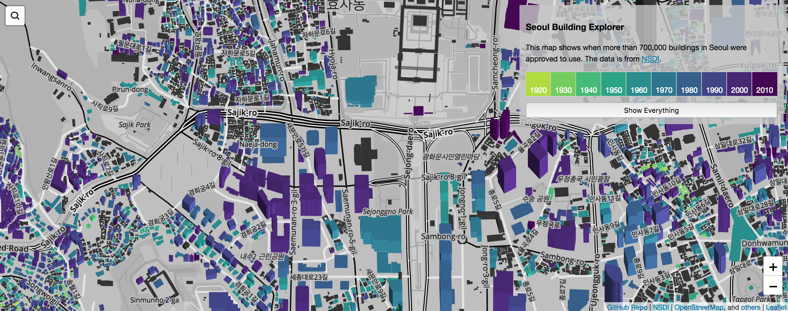

Mapping the ages of buildings in Seoul
South Korea has been releasing lots of great open data through its National Spatial Data Infrastructure Portal (NSDI). It includes more than 750,000 buildings in Seoul, including their shape, height, neighborhood and approval date. Inspired by built:LA, I decided to make a dynamic map showing the age of buildings in Seoul with Tangram.
When the map is zoomed in, you can see the shape and height of individual buildings, colored by the year of their construction. You can also click on individual building to find out more details. As you zoom out, the map changes to dots, and then shows age data aggregated by neighborhood. Click on a color block in the legend to just show buildings from a specific decade!
Can you guess which part of Seoul is the old downtown area by looking at this map?
